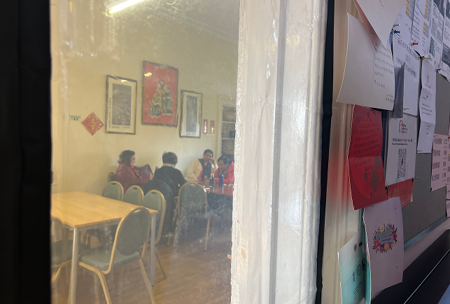
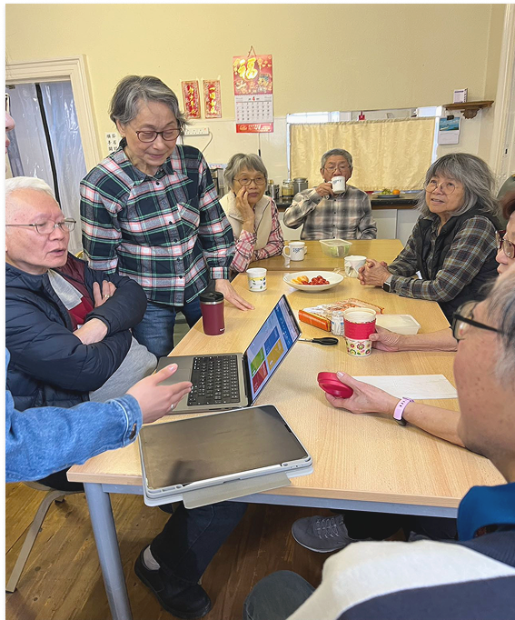
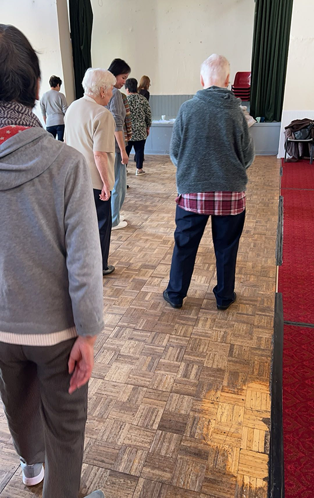
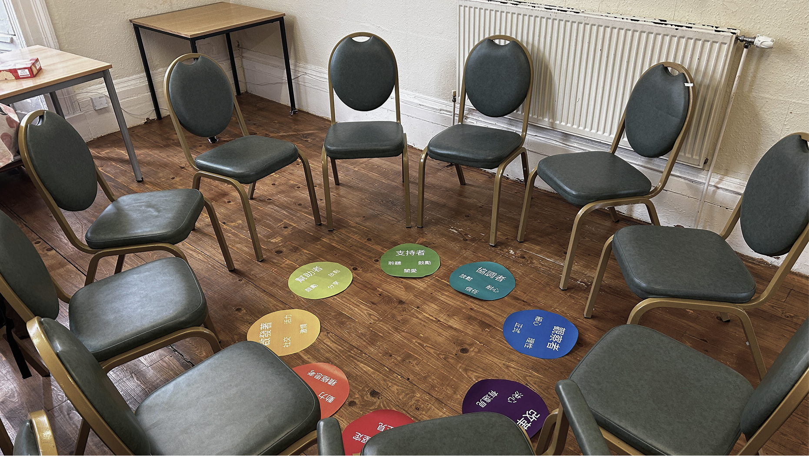
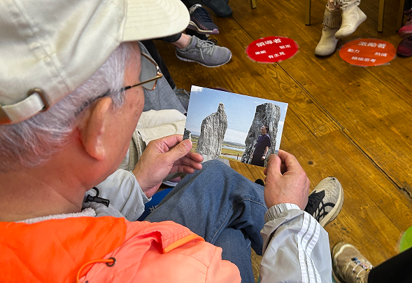
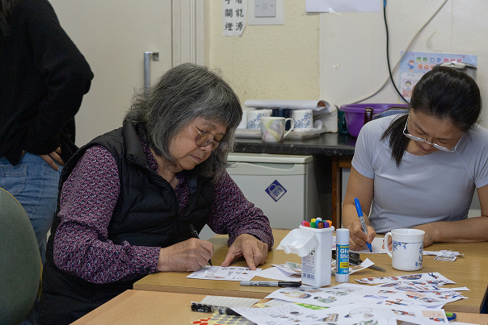
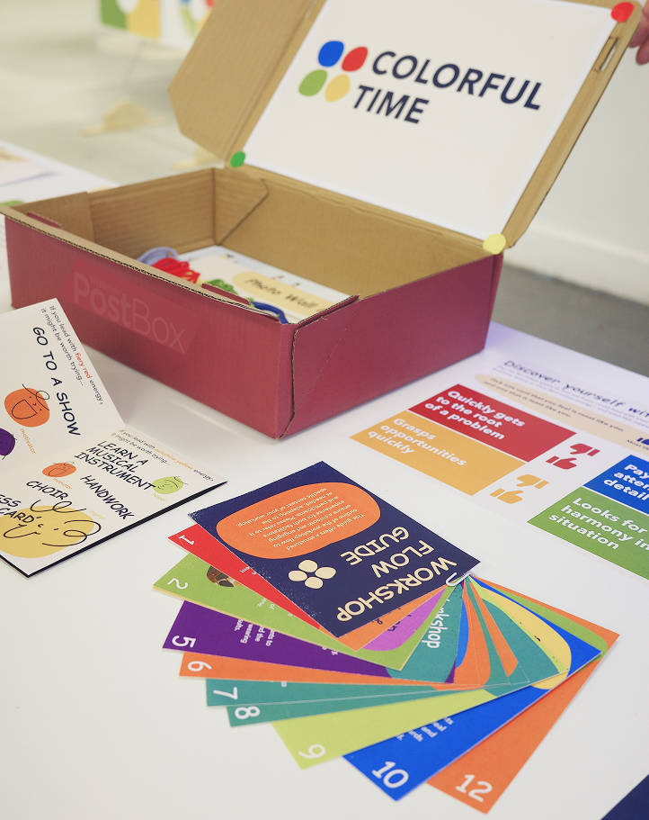

How can Insights Discovery’s colour personality framework help retirees rediscover purpose, build connections, and navigate the transition into their Third Age?
A £multimillion psychometric tool. But only for the office.
Insights Discovery is one of the world's leading personality assessment tools, used by organisations from Stripe to NHS. Based on Carl Jung's psychology, it maps people into four colour energies. But its reach stops at the workplace door — what if we could bring it into communities where it's needed most?
🎯
The Brief
Partnering with Insights Discovery to explore how their colour personality methodology could expand beyond corporate training — into the growing market of active ageing and retirement transitions.
🌍
The Context
Scotland's 65+ population is growing 3-4% annually. Retirees face identity loss, social isolation, and declining health perception 5-10 years before pension age. Communities need new tools for connection.
❓
The Question
How to use psychometric tools to help elder people during the transition into retirement to explore new lifestyles and purpose?
📐
The Approach
Ethnographic research across 3 Glasgow community organisations, in-depth interviews, expert consultations, and iterative workshop design with 23+ participants.
3
Community Orgs
23+
Participants
8
Weeks Fieldwork
4
Colour Energies
Stakeholder Value
Who benefits and how
Colorful Time is designed as a B2B2C service — delivered through community organisations to the people who need it most. Every layer of the ecosystem gains something concrete.
🧑🤝🧑
Elder People (55–75)
Primary beneficiary
Retirement often strips away the professional identity that structured daily life for decades. Without a role, without colleagues, the question "who am I now?" can feel paralysing. Colorful Time offers a new lens — not a job title, but a colour that describes how you move through the world.
🏷️ A new identity anchor
Colour personality gives retirees a positive self-label that travels with them into new social settings — replacing the lost work identity with something personal and memorable.
🤝 Lower barrier to first contact
Walking into a room of strangers is hardest in the first 60 seconds. A colour badge gives someone else an opener before a single word about history or hobbies is needed.
🎨 Vivid, memorable, accessible
Research and fieldwork both showed older adults respond immediately to saturated colour. Four colours are easy to hold in memory — far more so than a 16-type acronym.
🌱 Permission to explore
The activity guide tied to each colour gives a concrete, low-pressure invitation to try something new — fishing, choir, gardening — framed as an expression of who you already are.
🏥
NHS & Public Health
Systemic value
Social isolation in older adults is now classified as a public health risk equivalent to smoking 15 cigarettes a day. Proactive social prescribing — connecting people to community activity before a crisis — is far cheaper than treating depression or loneliness downstream.
📉 Reduced downstream cost
Every retiree who builds a social network through Colorful Time is less likely to require mental health intervention, GP visits, or emergency care related to isolation.
📋 Social prescribing infrastructure
The workshop and app provide a structured, repeatable tool that link workers and GPs can refer patients to — turning an abstract recommendation into a concrete next step.
🎯
Insights Discovery
Commercial partner
A £multimillion psychometric tool used by Stripe, NHS, and thousands of organisations — but its reach currently stops at the workplace door. The retirement demographic represents an entirely untapped market at the exact moment people have the most time and motivation to reflect on who they are.
📈 New market, new mission
Colorful Time gives Insights Discovery a credible B2B2C pathway into the active ageing sector — community centres, U3A chapters, and social prescribing networks — without cannibalising their corporate business.
🏛️
Community Organisations
Delivery partners
Centres like Wing Hong and Garnethill already run activities — but facilitators often struggle to help new members connect with each other quickly. Colorful Time gives them a structured ice-breaker that works from session one.
🗂️ Ready-to-run programme
The toolkit includes a facilitator guide, cards, and materials. No psychology training required — the colour framework does the heavy lifting.
🏛️
Age UK & Government
Policy alignment
Scotland's 65+ population grows 3–4% annually. Government and third-sector organisations like Age UK are under pressure to demonstrate measurable impact on active ageing and isolation reduction — with constrained budgets.
📊 Evidence-based, scalable
The workshop generates qualitative and quantitative data on social engagement — giving funders and policy teams something to report against. The toolkit is low-cost and replicable across any community context.
Theoretical Framework
The Third Age — an untapped chapter
Laslett (1991) mapped life into four ages. The Third Age — after retirement, before dependence — is an era ripe for self-discovery. Yet psychometric tools completely ignore this demographic.
1st
Dependence & Education
2nd
Independence & Work
3rd
Achievement & Fulfillment
4th
Final Dependence
Research Process
Embedded in the community
Eight weeks of immersive fieldwork across Glasgow's multicultural centres, retirement communities, and the University of the Third Age.




01
Ethnography
Embedded observation at Wing Hong & Garnethill Centre
02
Interviews
In-depth conversations with retirees at different stages
03
Case Study
U3A — "a youth club for retired people"
04
Expert Input
Consultation with Insights Discovery practitioners
05
Workshop
Iterative testing with real participants
Key Findings
What we discovered
Four insights that shaped Colorful Time — directly from 23+ participants across three community organisations.
🪞
Colours as an ice-breaker
Psychometric tools aren't the destination — they're the catalyst. Colour personalities gave retirees a safe, playful way to open up and connect.
👥
Socialising is survival
Social connection is the single most important factor in healthy ageing. Yet community centres offer limited activity types.
🔮
Imagination needs stimulating
Most retirees described a "regular and simple" lifestyle. Given the right prompts, they became animated about new possibilities.
🏷️
Don't call them "old"
Participants strongly resisted being labelled "elderly." U3A members called themselves "a youth club." Language matters.
From the Field
What we heard in the community
These observations from workshops and interviews directly shaped the design decisions that followed.
💡
The workshop successfully sparked curiosity about psychometric tools and introduced the basics of personality colours.
👗
The discussion on personality was further stimulated by incorporating elements of fashion and attire.
🔄
Participants realised that personality colours are fluid and can change over time.
💬
The colours prompted attendees to recall more personal stories and moments of interaction with others.
In their own words

"
Attending a playful workshop instead of a traditional lecture feels quite enjoyable.
Workshop Participant

"
I really enjoy cycling and would love to have someone join me.
Retiree, 4 years post-retirement
"
We think of ourselves as a youth club for retired people — more energetic people, they gather together and exchange skills.
U3A Coordinator
"
Every time I come here, I need to take two buses, spending two hours to attend the activity.
Wing Hong Member
The Concept
Colorful Time
A workshop toolkit that uses colour personality theory to help retirees explore self-discovery, understand others, and imagine new possibilities for their Third Age.

Toolkit
Colour personality cards, photo wall materials, postcard collage kit, and a facilitator's guide.
+
Workshop
A 90-minute guided experience: colour discovery → photo sharing → collage making → group discussion.
=
Colorful Time
Self-discovery through colour
Digital Extension
Eventbrite, but for who you are
The app extends the workshop into everyday community life. Instead of organising events by category or location alone, it uses colour personality as a social layer — helping retirees see not just what is happening nearby, but who is going and whether their energy will click.
The Design Insight
Why colour — not Myers-Briggs, not 16 personalities
During fieldwork we observed something consistent: older adults respond to vivid, saturated colour with immediate emotional recognition. Four colours — Red, Yellow, Green, Blue — are easy to hold in memory, easy to point at, and easy to say to a stranger across a community hall table.
A 16-type framework requires reading and memorising a code. A colour just is. That difference matters enormously when the goal is spontaneous social connection, not professional profiling.
Instant recognition
Retirees identified their colour within minutes. No manual needed. No acronym to explain.
🏷️A social badge, not a test score
When you walk into an activity centre and your name badge has a colour dot, it gives strangers an opening. "Oh, you're Green too — what does that mean for you?" The colour starts the conversation before words do.
🤝The first step of trust
Meeting someone new is hardest in the first 60 seconds. Shared colour energy signals shared values — giving two strangers a reason to believe they might enjoy each other's company before a single word about hobbies is exchanged.
Traditional Event Platform
📅
What: Community Workshop
When: Saturday 2pm
Where: Wing Hong Centre
Price: Free
You know the logistics. But will you enjoy the people there?
Colorful Time
🎨
6 going
Best for: 🔴 Red & 🟡 Yellow energies
Vibe: Active, social, hands-on
Your match: 92% personality fit
Missing: 🔵 Blue — you'd be the complement!
You know the people. You know you'll fit. That's why you'll go.
🏷️
Tag
Your colour becomes a visible identity — a badge that says who you are before you've said a word
🔍
Filter
See events by personality fit — not just category. Know who's going and whether the energy matches yours
🤝
Connect
Colour lowers the barrier to first contact — giving strangers a shared vocabulary before hobbies or history
Click through the full prototype · Includes a playable colour personality test
Test Results
The Colour Personality Wheel
2/3 of participants mapped to Green and Yellow — revealing a strong "feeling" preference among the retiree community.
This finding directly shaped the app's activity recommendation engine: the system weights Green and Yellow activities higher by default for new users, reflecting the community's natural personality distribution.
Positioning
Not therapy. But Connection.
While existing digital therapy tools address individual mental health through private 1-on-1 conversations, Colorful Time tackles a fundamentally different challenge: rebuilding social connections and purpose during the retirement transition — through shared experiences, not isolated reflection.
Digital Therapy Tools (e.g. Ash)
🧠
1-on-1 AI conversation
Private, individual, inward-focused
💊
CBT-based treatment
Anxiety, stress, emotional issues
👤
All adults 18+
General population with mental health needs
📱
B2C SaaS subscription
AI is the core product
"I don't feel well" → Help me cope
Colorful Time
👥
Community-based workshop
Social, collective, outward-focused
🎨
Jungian colour personality
Self-discovery, connection, purpose
🌿
Third Age retirees (55-75)
Retirement transition, cross-cultural
📦
B2B2C toolkit + workshop
Human facilitation is the core product
"I want a more fulfilling life" → Help me connect
What's Next
From prototype to pilot
The next phase involves partnering with two Glasgow community centres to run a 12-week pilot programme — measuring social connection, repeat attendance, and self-reported wellbeing before and after the colour-based intervention.